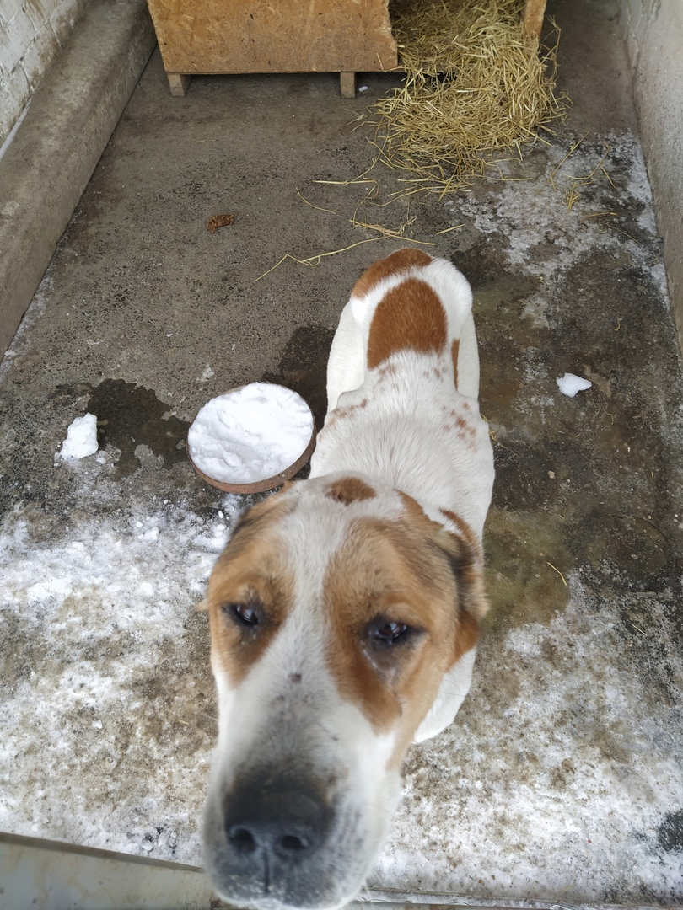
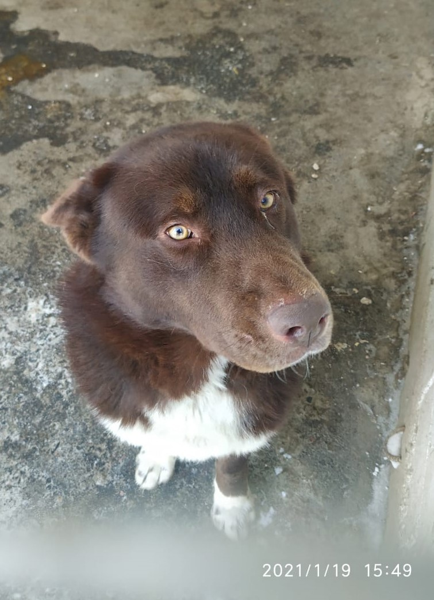

Ности приюта "Пансионат для бездомных животных"
Вот такая красотка появилась в приюте. Видели её в городе работники и не смогли пройти мимо, а работники не смогли отказать! Очень худая, кожа да кости😩 Ласковая, добрая девочка, очень умненькая и спокойная. Похоже недавно были щенки. Очень надеюсь, что у неё есть хозяева, но терзают сомнения по поводу их порядочности...🙄

Вот такой красавец пришел в приют. Сам прошевствовал на собачник, сам зашел в вольер☺ Видно, что парень бывшедомашний и каким образом очутился в наших краях стоит только догадываться и догадка эта не веселая. Сделаем прививочку и будем искать ему новых ответственных хозяев🤗

В приюте сегодня выдался день добрых новостей😊 Автоинспекторы патрулировали трассу М-2 «Крым» и на остановке рядом с Терновкой увидели большую подозрительную коробку. Сотрудники ДПС остановились проверить её и увидели восьмерых щенят! Малыши замерзли и проголодались. Полицейские доложили о необычной находке командиру роты, после чего приняли решение отвезти животных в приют. Теперь щенки в безопасности, а один из них уже нашел дом. Его забрал наблюдавший за инспекторами ДПС местный житель. Остальные еще ждут своих хозяев. Забрать питомца из приюта может любой желающий.